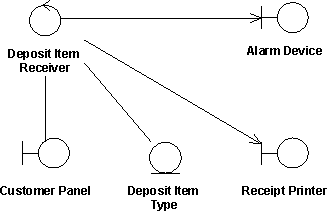

| Guideline: Use-Cases Realizations |
 |
|
| Related Elements |
|---|
A use-case realization represents how a use case will be implemented in terms of collaborating objects. This artifact can take various forms. It may include, for example, a textual description (a document), class diagrams of participating classes and subsystems, and interaction diagrams (communication and sequence diagrams) that illustrate the flow of interactions between class and subsystem instances. The reason for separating the use-case realization from its use case is that doing so allows the use cases to be managed separately from their realizations. This is particularly important for larger projects, or families of systems where the same use cases may be designed differently in different products within the product family. Consider the case of a family of telephone switches which have many use cases in common, but which design and implement them differently according to product positioning, performance and price. For larger projects, separating the use case and its realization allows changes to the design of the use case without affecting the baselined use case itself. In a model, a use-case realization is represented as a UML collaboration that groups the diagrams and other information (such as textual descriptions) that form part of the use-case realization.
UML diagrams that support use-case realizations can be produced in an analysis context, a design context, or
both, depending on the needs of the project. For each use case in the use-case model, there can be a use-case
realization in the analysis/design model with a realization relationship to the use case. In UML this is shown as a
dashed arrow, with an arrowhead like a generalization relationship, indicating that a realization is a kind of
inheritance, as well as a dependency.
A use-case realization in the design can be traced to a use case in the use-case model. Class Diagrams Owned by a Use-Case RealizationFor each use-case realization there may be one or more class diagrams depicting its participating classes. A class and its objects often participate in several use-case realizations. It is important while designing to coordinate all the requirements on a class and its objects that different use-case realizations may have. The figure below shows an analysis class diagram for the realization of the Receive Deposit Item use case. Note the use of boundary-control-entity stereotypes to represent analysis classes (see Concept: Entity-Control-Boundary Pattern).  The use case Receive Deposit Item and its analysis-level class diagram. Communication and Sequence Diagrams Owned by a Use-Case RealizationFor each use-case realization there can be one or more interaction diagrams depicting its participating objects and their interactions. There are two types of interaction diagrams: sequence diagrams and communication diagrams. They express similar information, but show it in different ways. Sequence diagrams show the explicit sequence of messages and are better when it is important to visualize the time ordering of messages, whereas communication diagrams show the communication links between objects and are better for understanding all of the effects on a given object and for algorithm design. Realizing use cases through interaction diagrams helps to keep the design simple and cohesive. Assigning responsibilities to classes on the basis of what the use-case scenario explicitly requires encourages the design to contain the following:
These factors help improve the overall quality of the system. |

| Concepts |
|---|
This program and the accompanying materials are made available under the View copyright information here: OpenUP Copyright |